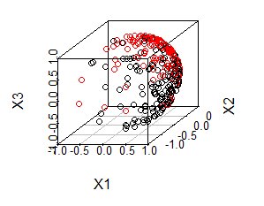

Ball: Statistical Inference and Sure Independence Screening via Ball Statistics
Jin Zhu, zhuj37@mail2.sysu.edu.cn
December 18, 2017
Source:vignettes/Ball.Rmd
Ball.RmdQuick Start
The fundamental problems for data mining and statistical analysis are:
Whether distributions of two samples are distinct?
Whether two random variables are dependent?
Two-sample test, which is designed to solve the first problem, is very important in medicine, psychology, biology and so on. For instance, we want to know whether lifespan of male and female is different. Thus, we collect lifetime data, and try to figure out whether ages in two samples are identically distributed. As the following images shown, if distribution of life span in two groups look like the left one, we conclude that lifetime are not identically distributed. But for the right one, it indicates that they are most likely to be identically distributed.

Test of independence, which is designed to solve the other problem, is also very essential. As the following images shown, there is a strong linear relation with Y and X1, while X2 seems to have nothing to do with Y. So X1 should be taken into account and added in to the regression model for Y, or should be studied carefully in order to confirm the correlation mechanism with Y.
Ball package provides solution for independence test, two-sample test or even K-sample test. Moreover, a generic non-parametric sure independence screening procedure also implemented to deal with ultra high dimensional data.
The three core functions are:
bd.test: examine whether univariate or multivariate distributions are identical.
bcov.test: test whether univariate or multivariate variables are related to each other.
bcorsis: carry out sure independence screening procedure to pick out the variables potentially related to response.
Quick Start: Univariate Two-sample Test
In this example, we generate two normal random variables with different location parameter:
x <- rnorm(50)
y <- rnorm(50, mean = 1)
# plot(density(x), xlim = c(-5, 5))
# lines(density(y), col = 'red')We use bd.test to perform the two-sample test to determine whether two samples come from the same distribution.
## TOFIX
# bd.test(x = x, y = y)The result of bd.test is that p-value < 0.05, which means to reject the null hypothesis, and conclude that two samples are come from different distribution. Consequently, the hypothesis test result is concordant to data generation mechanism.
Quick Start: Multivariate Two-sample Test
In this example, we will demonstrate how to perform a test of whether two multivariate distributions are identical. We generate two random samples of size 50, which are sampled from two different multivariate normal distributions:
We use bd.test to test whether two multivariate random samples are identically distributed.
bd.test(x = x, y = y)#
# 2-sample Ball Divergence Test (Permutation)
#
# data: x and y
# number of observations = 100, group sizes: 50 50
# replicates = 99, weight: constant
# bd.constant = 0.56944, p-value = 0.01
# alternative hypothesis: distributions of samples are distinctThe result of bd.test is that p-value < 0.05, so we conclude that two samples are not identically distributed.
Quick Start: Univariate Test of Independence
In this example, we will use the “W-shape” data from WIKI to demonstrate how to perform univariate test of independence with bcov.test .
We generate a dataset containing 50 samples.
# generate random perturbation:
noise <- runif(50, min = -0.3, max = 0.3)
x <- runif(50, 0, 4*pi)
y <- cos(x) + noise
# plot(x, y)Obviously, is related to , but the relationship is non-linear. We use bcov.test to perform the test of independence between and .
bcov.test(x = x, y = y)#
# Ball Covariance test of independence (Permutation)
#
# data: x and y
# number of observations = 50
# replicates = 99, weight: constant
# bcov.constant = 0.0023246, p-value = 0.01
# alternative hypothesis: random variables are dependentThe result of bcov.test is that p-value < 0.05, so we conclude that and are not independent, which means there is some kind of correlation between X and Y.
Quick Start: Multivariate Test of Independence
For multivariate independence test, we will demonstrate the usage of
bcov.test with the following example:
come from the bivariate normal distribution. The relation between
and
is:
x <- matrix(runif(50 * 2, -pi, pi), nrow = 50, ncol = 2)
noise <- runif(50, min = -0.1, max = 0.1)
y <- 2 * sin(x[,1] + x[,2]) + noiseWe use bcov.test to perform multivariate independence test:
bcov.test(x = x, y = y, weight = "prob")#
# Ball Covariance test of independence (Permutation)
#
# data: x and y
# number of observations = 50
# replicates = 99, weight: probability
# bcov.probability = 0.042974, p-value = 0.01
# alternative hypothesis: random variables are dependentThe result of bcov.test is that p-value < 0.05, so we conclude that multivariate random variable and are associated.
Advance Features
The features below have been implemented to help you analyse diverse and complicated real data.
Non-Hilbert Space Data
During the scientific research, we always have to deal with Non-Hilbert space data. However, the traditional statistical inference methods usually depend on some assumptions, which are not able to perform statistical inference on this kind of data directly. Whereas ball divergence doesn’t depend on the assumptions needed in traditional statistical inference method, and it’s able to perform two-sample test for data from Non-Hilbert space. We will demonstrate how to use Ball package to perform statistical inference for data from Non-Hilbert space with three examples:
Example 1: Simulated von Mises-Fisher distribution data
# load data:
data("bdvmf")The distribution of the data is shown in the following image:

In the image, the black dots () and red dots () respectively represent two group of simulated data with different distributions. The distributions are denoted by: Where denotes von Mises-Fisher distribution, are the orientation parameter of von Mises-Fisher distribution, denotes aggregation parameter.
We can tell from the image that, red dots and black dots are not identically distributed. However, it is a tough task for the traditional statistical method to distinguish distribution because it is not a conventional data in Hilbert space. Fortunately, since the computation for sample version of ball divergence (ball covariance) only involves calculate distance matrix and counting the number of samples located in a ball, we can obtain empirical ball divergence so long as we can define the distance metric between observations. Therefore, ball divergence still work for this example.
We apply ball divergence to this data by carrying out the following step. First, we calculate the geodesic distance matrix of the data, which have been implemented in function . Later, we pass the distance matrix to arguments and let , , and . The detailed solution is demonstrated below:
# calculate geodesic distance between samples:
dx <- nhdist(bdvmf[["x"]], method = "geodesic")
# sample sizes in each group: 150, 150
# Two-Sample Test based on BD :
bd.test(x = dx, size = c(150, 150), num.permutations = 99, distance = TRUE)#
# 2-sample Ball Divergence Test (Permutation)
#
# data: dx
# number of observations = 300, group sizes: 150 150
# replicates = 99, weight: constant
# bd.constant = 0.14483, p-value = 0.01
# alternative hypothesis: distributions of samples are distinctIn this example, we firstly calculate the geodesic distance matrix using nhdist function in Ball package. Then, pass dx to arguments x and set distance = TRUE to indicate that the x parameter is a distance matrix. Meanwhile, we set the size of each sample size = c(150, 150) and set the replication times num.permutations = 99. The result is that p-value < 0.05, which means that red dots and black dots are not identically distributed.
Example 2: Macaques Data
Based on Macaques data provided by dryden, scientists want to figure out whether there are differences in the shape of skull between Macaques of different genders. In a similar way, we can calculate the distance matrix of the data and transform this problem into two-sample test that can be solved by BD. Riemann shape distance is always used to describe the distance between shape data. By setting method = “riemann” in the nhdist function, we are able to calculate the riemann shape distance between shape data. The detailed procedure is demonstrated below:
# load data:
data("macaques")
# number of femala and male Macaca fascicularis:
# table(macaques[["group"]]) # f: 9; m: 9
# calculate Riemannian shape distance matrix:
dx <- nhdist(macaques[["x"]], method = "riemann")
# hypothesis test with BD:
bd.test(x = dx, num.permutations = 99, size = c(9, 9), distance = TRUE)#
# 2-sample Ball Divergence Test (Permutation)
#
# data: dx
# number of observations = 18, group sizes: 9 9
# replicates = 99, weight: constant
# bd.constant = 0.1922, p-value = 0.03
# alternative hypothesis: distributions of samples are distinctp-value is under 0.05, which means the skull shape differs between male macaques and female macaques.
Example 3: ArcticLake Data
bcov.test is related to calculating the distance between samples of two multivariate random variables. Therefore, we can examine independence assumption by employing bcov.test to non-Hilbert space real data so long as we obtain the distance matrix of the samples.
We take a data in the Book, The Statistical Analysis of Compositional Data, as an example to demonstrate how to use bcov.test to determine the dependence of non-Hilbert space data. Scientists collect Sand, silt and clay compositions of 39 sediment samples of different water depth in an Arctic lake. They want to figure out whether the compositions of sediment samples of different water depth are identical or not. To achieve the goal, we use bcov.test to perform the test of independence. The detailed procedure is demonstrated below:
data("ArcticLake")
# Distance matrix between y:
dy <- nhdist(ArcticLake[["x"]], method = "compositional")
# Distance matrix between x:
dx <- dist(ArcticLake[["depth"]])
# hypothesis test with BCov:
bcov.test(x = dx, y = dy, num.permutations = 99, distance = TRUE)#
# Ball Covariance test of independence (Permutation)
#
# data: dx and dy
# number of observations = 39
# replicates = 99, weight: constant
# bcov.constant = 0.0083848, p-value = 0.01
# alternative hypothesis: random variables are dependentWe first calculate the distance matrix dy and dx.
Then, we pass dx to arguments x, dy to
arguments y, and set the replication times num.permutations
= 99, distance = TRUE to indicate that the x and
y parameters are distance matrices.
The result shows that p-value is less than 0.05, an usual
significance level, so we conclude that the compositions of sediment is
associated with the water depth.
In the example above, we use the square root transformed data to calculate the geodesic distance as a measurement of the difference between different compositions of sediment samples (Dy). Meanwhile, we use euclidean distance to measure the difference of different water depth (Dx). For different data, we can use different measurements to cope with the different features in data.
K-Sample Test
bd.test is also applicable for testing of multiple samples. We generate three random normal samples of size 50, which are sampled from the same normal distribution. As an example, we use bd.test to test whether these samples are identically distributed.
#
# 3-sample Ball Divergence Test (Permutation)
#
# data: rnorm(n)
# number of observations = 150, group sizes: 50 50 50
# replicates = 99, weight: constant, kbd.type: sum
# kbd.sum.constant = 0.034105, p-value = 0.62
# alternative hypothesis: distributions of samples are distinctAs the result shown, p-value>0.05, which means we can’t
reject the null hypothesis.
We can also utilize bd.test to deal with
-Sample
problem in non-Hilbert space following the aforementioned procedure. At
the same time, remember to assign size vector to parameter size
arguments and set distance = TRUE.
Weighted Ball Covariance Test
Pan et. al(2017) show that the weighted ball covariance based independence test is statistical consistent against all dependence alternatives without any moment conditions and some times superior to standard version of ball covariance.
We have been implemented weighted ball covariance test in Ball package and we can employ it to data analysis by just setting weight = TRUE in bcov.test. Take ArcticLake data as example:
data("ArcticLake")
Dy <- nhdist(ArcticLake[["x"]], method = "compositional")
Dx <- dist(ArcticLake[["depth"]])
# hypothesis test with weighted BCov:
bcov.test(x = Dx, y = Dy, num.permutations = 99,
distance = TRUE, weight = "constant")#
# Ball Covariance test of independence (Permutation)
#
# data: Dx and Dy
# number of observations = 39
# replicates = 99, weight: constant
# bcov.constant = 0.0083848, p-value = 0.01
# alternative hypothesis: random variables are dependentBall Covariance Mutual Independence Test
Apart from the relationships between two random variables, another important dependence concept for a set of variables is mutual (or joint) independence, which says that any two disjoint subsets of variables are independent from each other. For instance, we know to investigate whether air temperature, soil temperature, humidity, wind and evaporation are correlated.
It is natural to extend ball covariance to measure mutual independence between random variables. More importantly, Mutual independence test based on ball covariance have been implemented in Ball package. We give two simply example in the following to demonstrate its usage.
The first example, are independent from the standard normal distribution , and
The Second example, are connected by a latent random variable , and
h <- rnorm(50)
w <- (h)^2
x <- abs(h)
y <- h * (h < 0)
z1 <- h * (h < 0.5)
z2 <- h * (h > -0.5)
z <- cbind(z1, z2)
example2 <- list(w, x, y, z)We bind these data to list example1 and example2 and pass them to arguments x in bcov.test to carry out ball covariance mutual independence test.
bcov.test(x = example1, num.permutations = 199)#
# Ball Covariance test of mutual independence (Permutation)
#
# data: example1
# number of observations = 50
# replicates = 199, weight: constant
# bcov.constant = 0.0013341, p-value = 0.11
# alternative hypothesis: random variables are dependent
bcov.test(x = example2, num.permutations = 199)#
# Ball Covariance test of mutual independence (Permutation)
#
# data: example2
# number of observations = 50
# replicates = 199, weight: constant
# bcov.constant = 0.038213, p-value = 0.005
# alternative hypothesis: random variables are dependentThe hypothesis test result for two examples show that p-value < 0.05, coinciding with the simulation setting.
Ball Correlation Based Sure Independence Screening
Recent technological advances have made it possible to collect ultra high-dimensional data. A common feature of these data is that the number of variables is generally much larger than sample sizes . For instance, the number of gene expression profiles is in the order of tens of thousands while the number of patient samples is in the order of tens or hundreds. However, traditional variable selection algorithms such as LASSO, SCAD may not perform well due to the statistical inaccuracy, and algorithmic instability.
A new framework, sure independence screening (SIS), was proposed to tackle the challenges above. SIS tries to filtering out the features that have marginal correlation with the response, hence effectively reducing the dimensionality to a moderate scale so that performing statistical algorithm is feasible.
BCor-SIS, a generic non-parametric sure independence screening procedure based on ball correlation, is able to pick out explanatory variables related to response. The linear, non-linear or linear interaction effect relationship can be captured by BCor-SIS even though data is heavy tail or existing outliers. More importantly, BCor-SIS is able to retain all of the important features in the model with probability tending to 1 under mild conditions.
BCor-SIS: Quick Start Example
In this example, we will utilize bcorsis function to
carry out BCor-SIS procedure. We generate 150 high dimensional instances
with 3000 independent standard gaussian explanatory variables
and univariate response variable
.
The relation between
and
is:
set.seed(1)
n <- 150
p <- 3000
x <- matrix(rnorm(n * p), nrow = n)
noise <- rnorm(n)
y <- 3*x[, 1] + 5*(x[, 3])^2 + noiseWe perform BCor-SIS procedure and display the top 5 variables index selected by BCor-SIS.
## TOFIX
# res <- bcorsis(y = y, x = x)
# head(res[[1]], n = 5)The bcorsis result shows that the first and the third variable are the two most important variables in 3000 explanatory variables which is consistent to simulation settings.
Extension of BCor-SIS: A Censored Survival Data
Survival analysis is a commonly used method for the analysis of censored data such as biological death and mechanical failure, which is usually subject to censoring. The main goal of survival analysis is to study the dependence of the survival time on covariate variables .
With the remarkable development of modern technology, a huge amount of covariate information such as microarray and SNP data are collected. Consequently, SIS procedure designed for censored survival data is in need. Pan et al(2017) proposed a extend BCor-SIS procedure which is able to selected the significant variables for censored data.
We implement BCor-SIS procedure for survival data in Ball package and use a publicly lung cancer genomic data from the Chemores Cohort Study to demonstrate its usage. The data outcome was the “Disease-Free Survival Time”. Patients were followed until the first relapse occurred or administrative censoring. In this genomic dataset, the expression levels of mRNA, miRNA as well as clinical variables from the 123 samples were included. Moreover, this dataset include 944 biological covariates and 1056 artificial standard gaussian variables which are independence with response. We employ extension of Bcor-SIS on this data to hunt for efficient covariates and demonstrate detailed procedure in the following.
## TOFIX
# result <- bcorsis(x = genlung[["covariate"]],
# y = genlung[["survival"]],
# d = "small", method = "survival")
# top_gene <- colnames(genlung[["covariate"]])[result[["ix"]]]
# head(top_gene, n = 1)We first pass covariates and censored information to arugments x and y, and set the method = “survival” to indicate that the y should be considered as a survival status containing event time and censored status. BCor-SIS asserts that hsa.miR.564, corresponding to gene MIR564, is strongly relevant to disease-free survival status. The conclusion is highly coincident with the statement in other public literature.